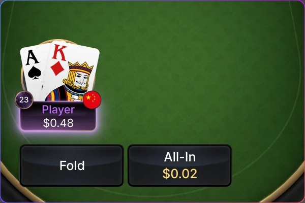
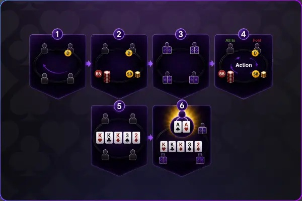
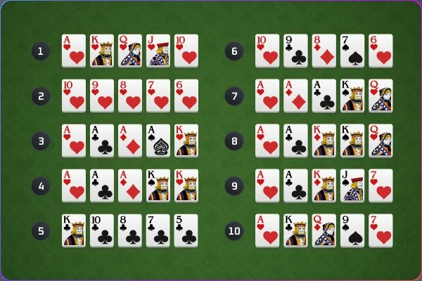

全押或棄牌（AoF）
全押或棄牌，極速對決
每一次決策都是生死一瞬
All-in or Fold（AOF） 採用「全押或棄牌」玩法，每一手牌都必須立即做出選擇。沒有跟注、沒有複雜下注流程，以最快的節奏考驗 Push/Fold 策略、籌碼管理與決策判斷，帶來緊湊刺激的撲克對戰體驗。
遊戲簡介

玩法與德州撲克相似，但每位玩家在自己的回合只能做兩個選擇：
1. 全押（All-in）
2. 棄牌（Fold）
3. 沒有加注、跟注、過牌等選項，直接進入對決或退出
最高為4人桌
此遊戲模式不支援EV兌現及多次發牌
遊戲流程簡介

每位玩家獲得兩張手牌，輪到你行動時，只能選擇：
1. 全押：把你目前所有籌碼一次下注
2. 棄牌：直接放棄這手牌
若有2位以上玩家全押，則會發出 5 張公共牌並比牌型
贏家拿下底池，或視情況分底池（主池 / 副池）
牌型排名

一旦進入全押對決，會立即發出 5 張公共牌（Flop + Turn + River），每位玩家用手牌 + 公共牌組成最佳五張牌型，牌型大小與傳統德州撲克相同：
1. 同花順：五張連號同花色
2. 四條：四張相同點數
3. 葫蘆：三條 + 一對
4. 同花：五張同花色
5. 順子：五張連號
6. 三條：三張相同點數
7. 兩對：兩組一對
8. 一對：一組一對
9. 高牌：無組合時比最大牌